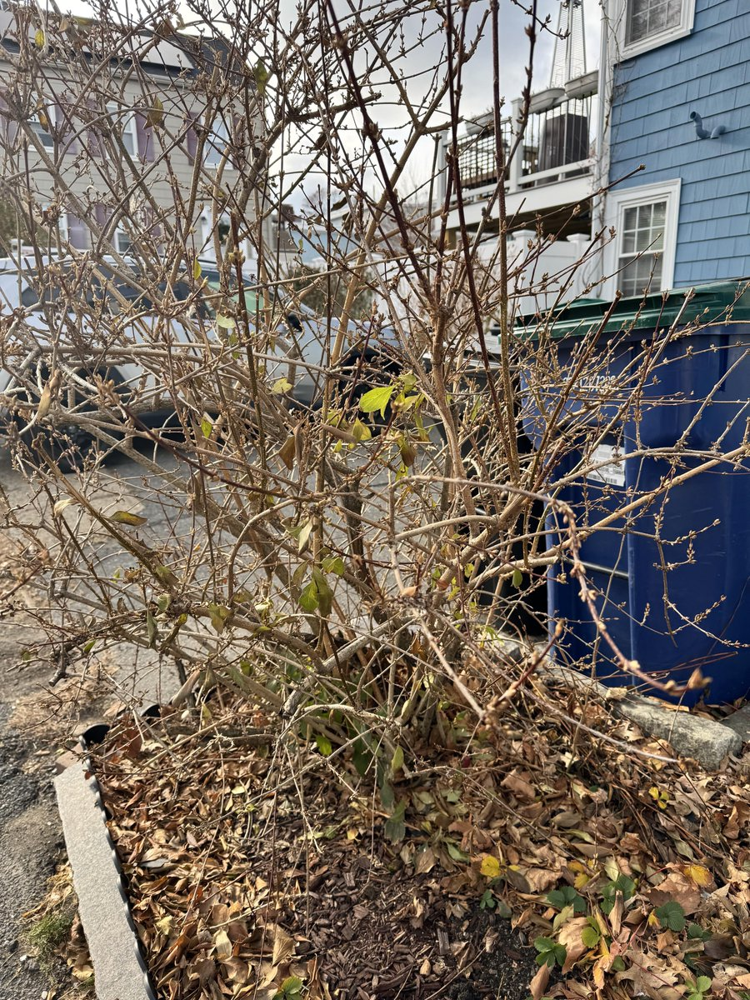

在我长大的西南农村地区，这种事情很常见，几乎不存在不打孩子的父母。
以我那一片地方来说，男孩一般是用连翘枝条（我也是刚刚知道这玩意的学名）抽屁股、大腿，比较狠的会抽到满是血痕红肿，连续几天走路打颤，痛到不敢坐、不敢躺着睡。比较轻的就是打破皮、留红印。
对女孩会好些，不打腿，打手心，重的上黄金条儿（方言，连翘枝条晒干之后是金色、光滑的），轻的用手打。
说起来……初中时有一个很拽的中年教师经常在课上训我们，“你们这些成绩差成这样的学生，如果是我的孩子早就把他赶出家门了，男的脱光了丢出去，女的给她留套衣服……”什么什么的。
他儿子在市一中，成绩如何我不清楚，但有点担心他的心理健康，也不知道现在怎么样了。

以我那一片地方来说，男孩一般是用连翘枝条（我也是刚刚知道这玩意的学名）抽屁股、大腿，比较狠的会抽到满是血痕红肿，连续几天走路打颤，痛到不敢坐、不敢躺着睡。比较轻的就是打破皮、留红印。
对女孩会好些，不打腿，打手心，重的上黄金条儿（方言，连翘枝条晒干之后是金色、光滑的），轻的用手打。
说起来……初中时有一个很拽的中年教师经常在课上训我们，“你们这些成绩差成这样的学生，如果是我的孩子早就把他赶出家门了，男的脱光了丢出去，女的给她留套衣服……”什么什么的。
他儿子在市一中，成绩如何我不清楚，但有点担心他的心理健康，也不知道现在怎么样了。

我见过非常可怕的打小孩场景。
我的亲戚，拿着衣架，在空气里划出声响，我确信他用尽了成年人所有的力气去打那个小孩。
那小孩没有尊严，求着，别打了，别打了。
人类怎么可以被这样对待………凭什么能够对另一个法律意义上的人有这种马戏团训兽一样的虐待。
我的亲戚，拿着衣架，在空气里划出声响，我确信他用尽了成年人所有的力气去打那个小孩。
那小孩没有尊严，求着，别打了，别打了。
人类怎么可以被这样对待………凭什么能够对另一个法律意义上的人有这种马戏团训兽一样的虐待。